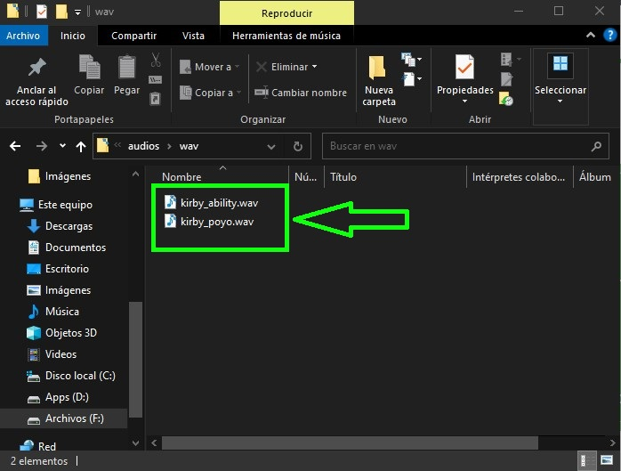

PersonalHacks
Como cambiar sonido de conexión de USB de tu computadora
Solo Windows
Materiales
|
• Tu computadora • Audios con prefijo .wav (de preferencia dos que suenen diferente) |
Instrucciones
1. Primero, se tiene que conseguir los audios a utilizar.
NOTA: Debido a que me encuentro enferma de la garganta, no me fue posible generar mis propios audios, por lo que opte por buscarlos en internet y descargarlos de la siguiente pagina: ZEDGE
Los audios deben ser .wav, puedes usar convertidores en linea. Te recomiendo este: Audio-Converter pero puedes usar el que tu quieras
2. Una vez con los audios, procedemos a abrir configuración:
|
Manera de abrir Configuración (normal):
Manera de abrir Configuración (para verte como Tecnico):
|

3. Una vez en Configuración, nos vamos a la barra de busqueda y escribimos Temas y seleccionamos "Temas y configuración relacionada"
4. Una vez en la pagina, seleccionamos la opción de "Sonidos"
5. En esta ventana vemos que tenemos cuatro pestañas, nos quedaremos en la de Sonidos, una vez aquí buscamos en Eventos de programa "Conectar dispositivo"
6. Nos mostrara el audio predeterminado que tiene, ahora, damos click en Examinar y buscamos la carpeta en donde guardamos nuestros audios
7. Una vez encontrada la que queremos poner para conexión de dispositivo la seleccionamos y damos abrir
8. Ahora repetiremos los pasos del 5 al 7 pero ahora con el Evento de programa "Desconexión de dispositivo"
9. Finalmente, damos en aplicar, cerramos todo y listo tienes sonido de conexión y desconexión personalizados